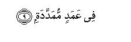

بسم الله الرحمن الرحيم
Sayyid Abul Ala Maududi - Tafhim al-Qur'an - The Meaning of the Qur'an
 104.
Surah Al Humaza (The One Who Slanders)
104.
Surah Al Humaza (The One Who Slanders)
The Surah takes its name from the word humazah occurring in the first verse.
All commentators are agreed that it is a Makki Surah; a study of its subject matter and style shows that this too is one of the earliest Surahs to be revealed at Makkah.
In it some of the evils prevalent among the materialistic hoarders of wealth in the pre-Islamic days have been condemned. Every Arab knew that they actually existed in their society; they regarded them as evils and nobody thought they were good. After calling attention to this kind of ugly character, the ultimate end in the Hereafter of the people having this kind of character has been stated. Both these things (i.e. the character and his fate in the Hereafter) have been depicted in a way which makes the listener automatically reach the conclusion that such a man fitly deserves to meet such an end. And since in the world, people of such character do not suffer any punishment, but seem to be thriving instead, the occurrence of the Hereafter becomes absolutely inevitable.
If this Surah is read in the sequence of the Surahs beginning with Az-Zilzal, one can fully well understand how the fundamental beliefs of Islam and its teachings were impressed on the peoples minds in the earliest stage in Makkah. In Surah Az-Zilzal, it was said that in the Hereafter man's full record will be placed before him and not an atom's weight of good or evil done by him in the world will have been left unrecorded. In Surah Al-Adiyat, attention was drawn to the plunder and loot, bloodshed and vandalism, prevailing in Arabia before Islam; then making the people realize, that the way the powers given by God were being abused, was indeed an expression of sheer ingratitude to Him, they were told that the matter would not end up in the world, but in the second life after death not only their deeds but their intentions and motives too would be examined, and their Lord fully well knows which of them deserves what reward or punishment. In Surah Al-Qariah after depicting Resurrection the people were warned that in the Hereafter a man's good or evil end will be dependent on whether the scale of his good deeds was heavier, or the scale of his evil deeds was heavier:In Surah At-Takathur the people were taken to task for the materialistic mentality because of which they remained occupied in seeking increase in worldly benefits, pleasures, comforts and position, and in vying with one another for abundance of everything until death overtook them. Then, warning them of the evil consequences of their heedlessness, they were told that the world was not an open table of food for then to pick and choose whatever they pleased, but for every single blessing that they were enjoying in the world, they would have to render an account to their Lord and Sustainer as to how they obtained it and how they used it. In Surah Al-Asr it was declared that each member, each group and each community of mankind, even the entire world of humanity, was in manifest loss, if its members were devoid of Faith and righteous deeds and of the practice of exhorting others to truth and patience. Immediately after this comes Surah Al-Humazah in which after presenting a specimen of leadership of the pre-Islamic age of ignorance, the people have been asked the question: "What should such a character deserve if not loss and perdition?"

In the name of Allah, the Compassionate, the Merciful.

[1-9] Doomed (to ruin) is every such person who slanders others (in their face) and backbites them habitually,1 who gathers wealth and counts it over and over again.2 He thinks that his wealth will remain with him for ever.3 Nay. never! He will be cast4 into the crushing place5 And what do you know what the crushing place is? It is the Fire of Allah,6 kindled brightly, which shall rise up to the hearts.7 It will be covered down on them8 (in a way that ) they shall be (enclosed) by tall columns.9
1The words used in the original are humazat il-lumazah. In Arabic hamz and lamz are so close in meaning that they are sometimes used as synonyms and sometimes with a little difference in the shade of meaning. But this difference is not definite and clear, for the meaning given to lamz by some Arabic speaking people themselves is given to lamz by other Arabic speaking peoples. On the contrary, the meaning given to harm by some people is given to hamz by others. Here, since both the words appear together and the words humazat il-lumazat have been used, they give the meaning that it has become a practice with the slanderer that he insults and holds others in contempt habitually. He raises his finger and winks at one man, finds fault with the lineage and person of another, taunts one in the face and backbites another; creates differences between friends and stirs up divisions between brothers; calls the people names and satirizes and defames them.
2This second sentence after the first sentence by itself gives the meaning that he slanders others because of his pride of wealth. The words jama `a malan for collecting money suggest the abundance of wealth; then the words "counting it over and over again" depict the person's miserliness and his selfish hoarding of wealth.
3Another meaning also can be: "He thinks that his wealth will make him immortal." That is, he is so engrossed in amassing wealth and counting it over and over again that he has forgotten death and he never bothers to consider that a time will come when he will have to depart from the world empty-handed, leaving everything behind.
4The word in the original is la yrtnbadhanna. Nabdh in Arabic is used for throwing away a thing regarding it as worthless and mean. This by itself indicates that because of his wealth he thinks that he is a great man but on the Day Of Resurrection he will be hurled into Hell as a mean and contemptible object.
5The word hutamah in the original is from hatm, which means to smash, crush and break into pieces. Hell has been described by this epithet because it will crush and break to pieces whatever is thrown into it because of its depth and its fire.
6Nowhere else in the Qur'an has the fire of Hell been called the fire of Allah. Here, its ascription to Allah not only expresses its dreadfulness but it also shows how the wrath and contempt of Allah envelops those who become proud and arrogant with the worldly wealth. That is why Allah has described that fire as His own Fire into which they will be hurled.
7Tattali'u is from ittala a, which means to climb and mount to the top, and also to be aware and informed. Afidah is plural of fuwad, which means the heart. But this word is not used for the organ which throbs in the breast, but for the seat of man's understanding and consciousness, his'feelings and desires, beliefs and thoughts, motives and intentions, Thus, one meaning of the rising of the fire to the hearts is that this. fire will reach the place which is the center of man's evil thoughts, false beliefs, impure desires and feelings, and wicked motives and intentions. The second meaning is that the Fire of Allah will not be blind like the tire of the world, which burns up the deserving and the non-deserving alike, but it will reach the heart of every culprit and discover the nature of his crime and then punish him according to his guilt.
8That is, after the culprits have been thrown into it, Hell will be closed in upon them without leaving any slit or opening anywhere, in order to choke and suffocate them.
9Fi amad-im-mumaddahah can have several meanings
(1) That the gates of Hell will be closed and tall columns will be erected on them;
(2) that the culprits will be tied to the tall columns;
(3) according to Ibn `Abbas, the flames of the fire shall be rising high like tall columns.